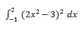
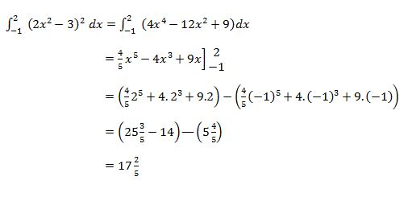
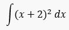
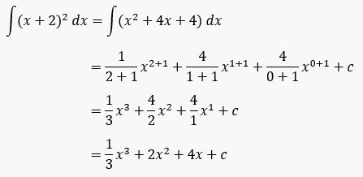

merupakan kebalikan dari turunan. Jika F(x) adalah fungsi umum yang bersifat F(x) = f(x), maka F(x) merupakan anti turunan atau integral dari f(x). Berikut merupakan jenis-jenis dari integral :
Integral Tentu merupakan jumlahan suatu daerah yang dibatasi kurva atau persamaan tertentu.
Rumus :
Keterangan :
Contoh Soal!
Tentukan hasil dari integral berikut.

Jawab :

Integral Tak Tentu f(x) merupakan suatu fungsi umum yang ditentukan melalui hubungan.
Rumus :
Keterangan :
Contoh Soal!
Tentukan hasil dari integral berikut.

Jawab :
